Mediterranean Cuisine

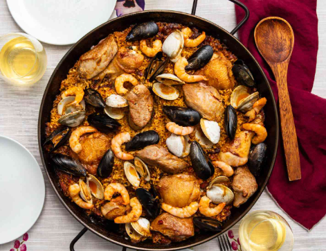
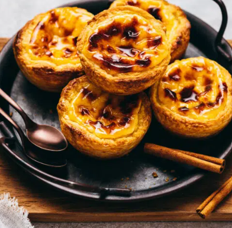
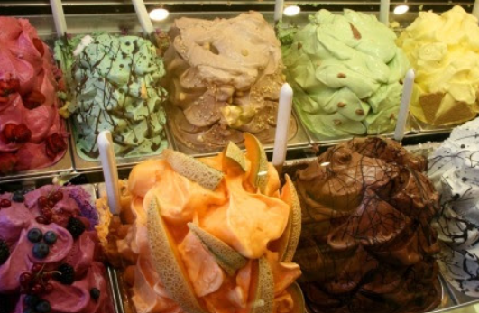
These foods include Ingredients like Pasta, rich, seafood, chicken and many deserts.
Foods: Italian Pasta, Spanish Paella, Spanish Flan, and Gelato
Some Famous United States Cuisine
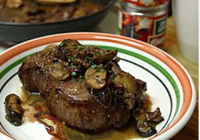
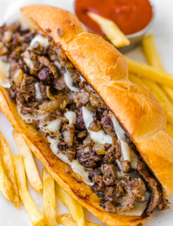
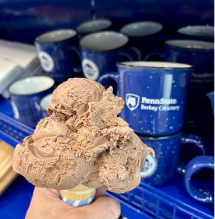
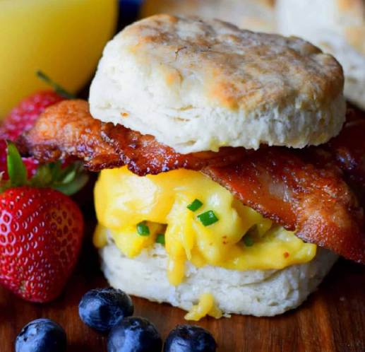
These show many classic American foods as well as regional specialties.
Foods: Steak, Philly Cheesestake, state collage ice cream, egg sandwiches.
Mexican Cuisine
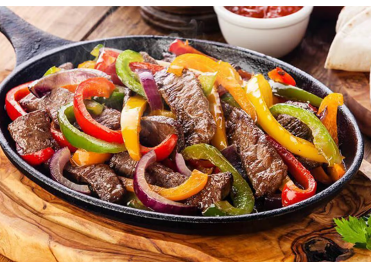
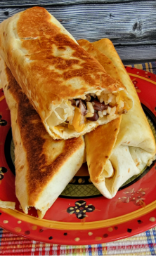
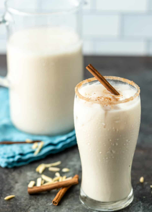
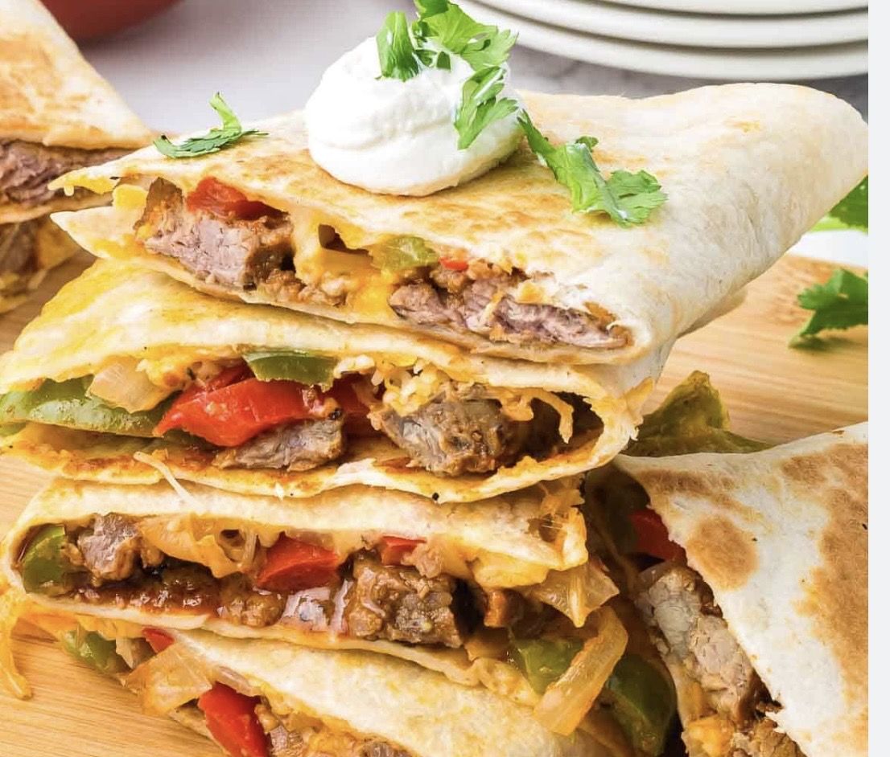
These are classic Mexican dishes know for bold flavors with spices and fresh ingredients.
Foods: Fajitas, Burritos, horhata, steak and cheese quesadilla
Moroccan Cuisine
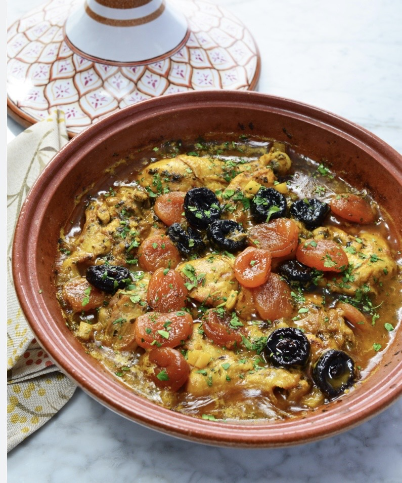
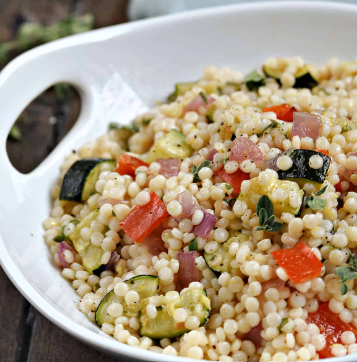
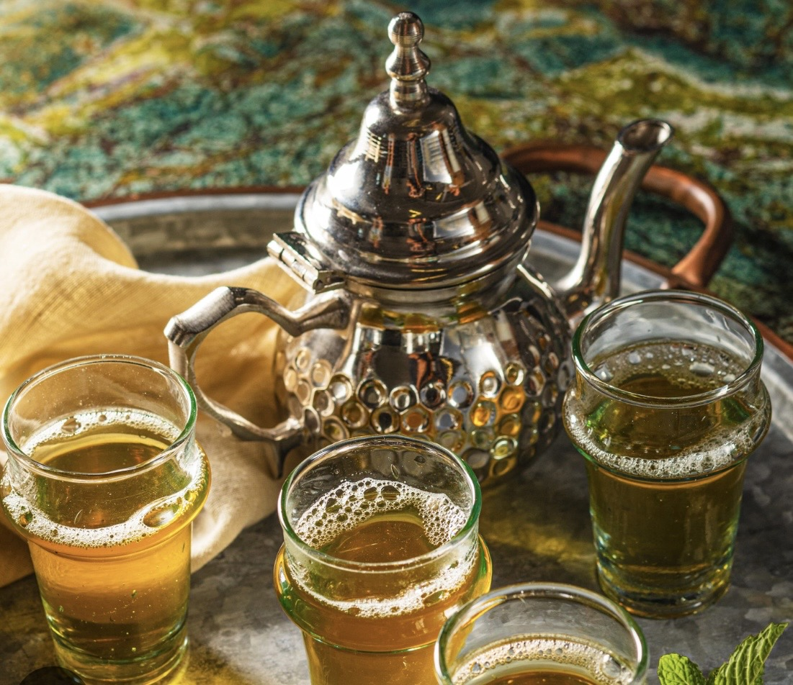
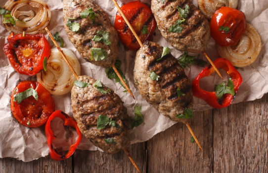
Moroccan food is known for using rich spices and having slow-cooked meals.
Foods: Tagine, Couscous, Mechoi, and Kefta
Norwegian Cuisine
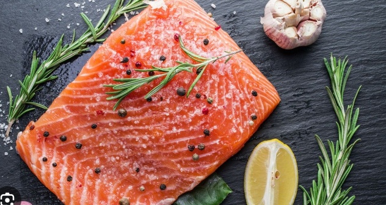
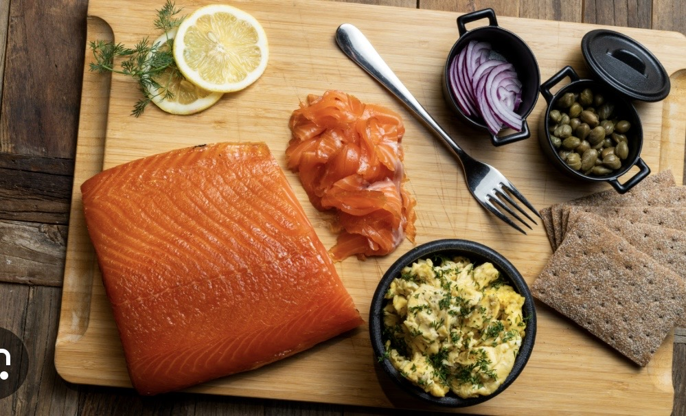
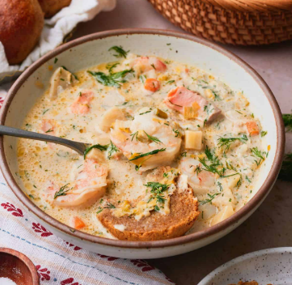
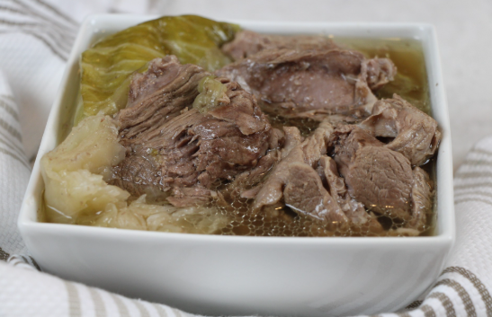
Food from Norway is focused on seafood and traditional dishes.
Foods: Salmon, Smoked Salmon, Fiskesuppe and Fårikål